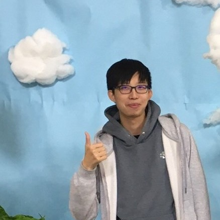

About Me
廖柏丞 | Bo-cheng Liao | かしわ
National Chung Hsing University
Major: Computer Science Engineer (CSE)
Minor: Horticulture (HORT)
Full stack web developer
Hadname Link @liao2000
Last modified: Mar 5, 2021
My Projects
Building...
Last modified: Mar 5, 2021
My Résumé
Education
- National Chung Hsing University
2018 - present- Major in Computer Science and Engineering
- Minor in Horticulture
- Taipei Municipal Chenggong High School
2015 - 2018
Technical skills
Programming language or framework- C
- Go
- Java
- Python
- tensorflow
- keras
- openCV
- Dart, Flutter
- PHP7
- SQL
- MySQL
- SQLite
- HTML5, CSS3
- Javascript (ES5, ES6)
- jQuery
- Node.js
- Electron
- Coffee Script
- Arduino
- Git, Github
- Google cloud platform (API Engine)
- Docker
- Linux (Ubuntu, KDE neon, CentOS)
- Heroku
Experience
- 2020/9 ~ present
Full-stack web develop for Core Materials Inc.
https://corematerials.co - 2020/8 ~ present
Full-stack web develop for the forum website of HIM International Music Inc. - 2020/7 ~ present
Full-stack web develop for the Bachelor Program of Electrical Engineering and Computer Science in NCHU
https://bpeecs.nchu.edu.tw - 2020/10 ~ present
Cram school math & physics & chemistry teacher (Grade7~Grade12)
明光義塾講師 Meikoschool Co., Ltd - 2019/7 ~ 2020/1
Senior high school math tutor (Grade 10) - 2019/7 ~ 2019/8
Junior high school math & science tutor (Grade 9)
Last modified: June 23, 2021